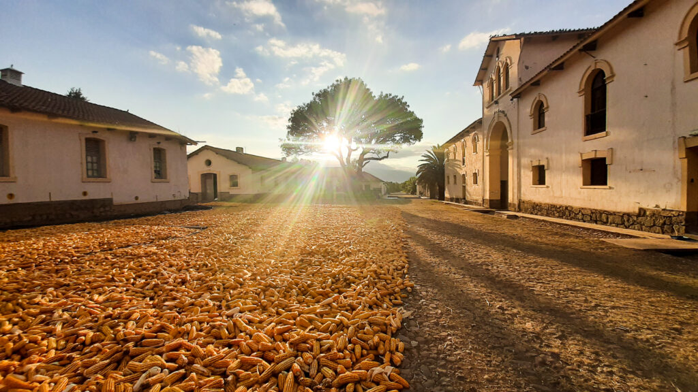

Nuestra Historia
La Granja Pairumani nació hace más de tres décadas con un sueño: crear un espacio donde la tradición agrícola se encontrara con prácticas modernas y sostenibles. Ubicada en el corazón de los valles de Bolivia, nuestra granja representa el compromiso de nuestras familias con la tierra y sus frutos.
Cada generación ha aportado su sabiduría, transformando Pairumani en un referente de agricultura orgánica y turismo educativo. Hoy, nos enorgullece compartir con el mundo nuestro legado, nuestros productos y la belleza de nuestras tierras.
Nuestra Visión
Ser un referente en producción agroecológica y educación ambiental en Bolivia, demostrando que la sostenibilidad y la rentabilidad pueden coexistir en armonía con la naturaleza.
Nuestra Misión
Producir alimentos de alta calidad mediante prácticas agrícolas sostenibles, promover el turismo educativo que genere conciencia ambiental, conservar nuestras tradiciones culturales y contribuir al desarrollo integral de nuestras comunidades.
Valores Fundamentales
Sostenibilidad
Cuidamos el medio ambiente en cada aspecto de nuestras operaciones, garantizando que las generaciones futuras hereden tierras fértiles.
Calidad
Nos comprometemos con productos de excelencia, cultivados sin pesticidas ni químicos dañinos.
Educación
Creemos en el poder educativo del turismo para transformar conciencias y crear ciudadanos responsables.
Comunidad
Trabajamos en beneficio de nuestras comunidades locales, generando empleo y oportunidades de crecimiento.
Nuestros Logros
- ✓ Certificación en agricultura orgánica internacional
- ✓ Más de 50,000 visitantes satisfechos en 10 años
- ✓ Programas de educación ambiental en escuelas locales
- ✓ Reducción del 80% en residuos gracias a compostaje integral